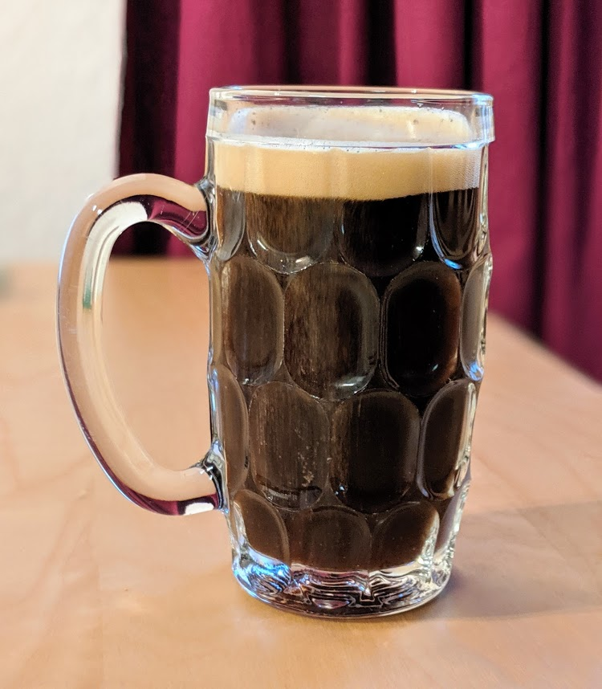

Kvas

Pour six litres de Kvas:
- Six tranches (de la taille d'une tranche de pain de mie) de pain noir
- 450g de sucre
- Une cuillère à soupe de levure de boulanger (pas de levure chimique, hein)
- (facultatif) une poignée de raisins secs, ou de noix décortiquées, ou d'un autre truc sec similaire susceptible de donner du goût
- Prendre une groooosse marmite et y faire bouillir environ 6,5 litres d'eau.
- Pendant ce temps, cramer le pain. La méthode facile est de passer chaque tranche deux fois au grille pain, sur le réglage maximal (oui oui), mais on peut aussi le faire au four. Il faut que ce soit bien noir des deux côtés. Penser à ouvrir la fenêtre durant cette étape.
- Quand l'eau bout et que le pain est cramé, retirer du feu, ajouter le pain dans la marmite avec les raisins (ou autre). Laisser comme ça une nuit (8 heures minimum).
- Virer le pain et le jeter. Mélanger le sucre et la levure, les ajouter dans la marmite, et recouvrir d'un couvercle étanche et/ou de film plastique.
- Laisser comme ça six heures, en mélangeant toutes les deux heures environ. Puis, virer ce qui reste de solide dans la marmite avec une écumoire.
- Mettre en bouteille dans des bouteilles de 2L en plastique, ayant au préalable contenu du soda. C'est important pour l'intégrité de votre maison que ce soit des bouteilles prévues pour contenir un liquide gazeux. Fermer bien hermétiquement, conserver au frigo.
- Consommer à partir du lendemain, et dans les quelques jours suivants. Attention en ouvrant les bouteilles, c'est gazeux : y aller doucement, ou bien ça va faire pschit et en mettre de partout =)
Remarque : c'est gazeux. Y aller doucement. Ou bien ça va en mettre de partout. Je l'ai déjà dit, mais ça vaut le coup de le répéter, je crois :D Si vous attendez quelques jours, l'ouverture sera comparable à celle d'une bouteille de Coca qu'on a secouée comme un barbare juste avant. Par ailleurs, il faut bien utiliser des bouteilles en plastique, utiliser des bouteilles en verre pour ça est un excellent moyen de se retrouver à l'hôpital.